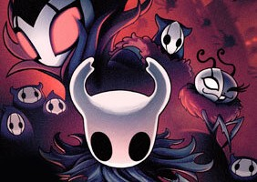

Hollow Knight is a critically acclaimed Metroidvania game developed by Team Cherry, known for its deep worldbuilding and atmospheric storytelling. The game is set in Hallownest, a vast, ruined kingdom filled with forgotten history, cryptic lore, and hauntingly beautiful landscapes. Each area, from the decaying crossroads to the lush Greenpath and eerie Deepnest, is distinct in both aesthetics and environmental storytelling. The lore is subtly woven into the world through NPC dialogue, item descriptions, and background details, allowing players to piece together the tragic downfall of Hallownest at their own pace. This approach to worldbuilding creates a sense of mystery and immersion, making exploration feel both rewarding and melancholic.
Boss design in Hollow Knight is a standout feature, offering a diverse array of challenging encounters that test the player’s skill and adaptability. Each boss is uniquely designed, not just in mechanics but also in how they contribute to the game's lore. Some, like the Mantis Lords, showcase the honor and traditions of Hallownest’s past, while others, like the Broken Vessel, embody the kingdom’s tragic corruption. The fluid, responsive combat system ensures that every fight feels fair yet demanding, rewarding precision and pattern recognition. Additionally, the game’s use of music, animation, and sound design enhances each battle’s intensity, making boss fights not just tests of skill but also emotional and narrative experiences.
About Hollow Knight
Hollow Knight is a critically acclaimed Metroidvania game developed by Team Cherry, known for its deep worldbuilding and atmospheric storytelling. The game is set in Hallownest, a vast, ruined kingdom filled with forgotten history, cryptic lore, and hauntingly beautiful landscapes. Each area, from the decaying crossroads to the lush Greenpath and eerie Deepnest, is distinct in both aesthetics and environmental storytelling. The lore is subtly woven into the world through NPC dialogue, item descriptions, and background details, allowing players to piece together the tragic downfall of Hallownest at their own pace. This approach to worldbuilding creates a sense of mystery and immersion, making exploration feel both rewarding and melancholic.
Combat
Boss design in Hollow Knight is a standout feature, offering a diverse array of challenging encounters that test the player’s skill and adaptability. Each boss is uniquely designed, not just in mechanics but also in how they contribute to the game's lore. Some, like the Mantis Lords, showcase the honor and traditions of Hallownest’s past, while others, like the Broken Vessel, embody the kingdom’s tragic corruption. The fluid, responsive combat system ensures that every fight feels fair yet demanding, rewarding precision and pattern recognition. Additionally, the game’s use of music, animation, and sound design enhances each battle’s intensity, making boss fights not just tests of skill but also emotional and narrative experiences.
*Hollow Knight* was developed by Team Cherry, a small indie studio based in Australia. The project began as a passion-driven effort by three developers—Ari Gibson, William Pellen, and David Kazi—who wanted to create a beautifully atmospheric and challenging Metroidvania-style game. Initially, the game was a prototype made for Ludum Dare, a game jam competition, but its potential encouraged the team to expand on the idea. To fund the project, Team Cherry launched a Kickstarter campaign in 2014, setting a modest goal of $35,000 AUD. The campaign was a success, surpassing its goal and allowing the team to refine their vision, leading to the deep and expansive world of Hallownest that players experience today.
The development process was ambitious despite the team’s small size. Hollow Knight’s art, directed by Ari Gibson, features a unique hand-drawn style with intricate environments and expressive animations, all contributing to its dark yet charming aesthetic. The team meticulously designed the game's vast interconnected world, ensuring each area felt distinct while maintaining an overarching sense of mystery and exploration. Gameplay was refined through extensive testing, balancing precise platforming, fluid combat, and engaging enemy encounters. The game’s hauntingly beautiful soundtrack, composed by Christopher Larkin, further enriched the atmosphere, heightening the emotions of each moment in the player’s journey.

After years of hard work, *Hollow Knight* was released in 2017 on PC, with later ports to consoles like the Nintendo Switch, PlayStation 4, and Xbox One. It quickly gained critical acclaim for its challenging yet fair gameplay, deep lore, and immersive world. Fans praised its sense of discovery, rewarding exploration, and the sheer amount of content for an indie title. The game's success led to plans for a sequel, *Hollow Knight: Silksong*, which will follow a new protagonist, Hornet. *Hollow Knight* remains one of the most beloved indie games of its time, demonstrating the power of passionate developers and the indie game community in creating unforgettable experiences.